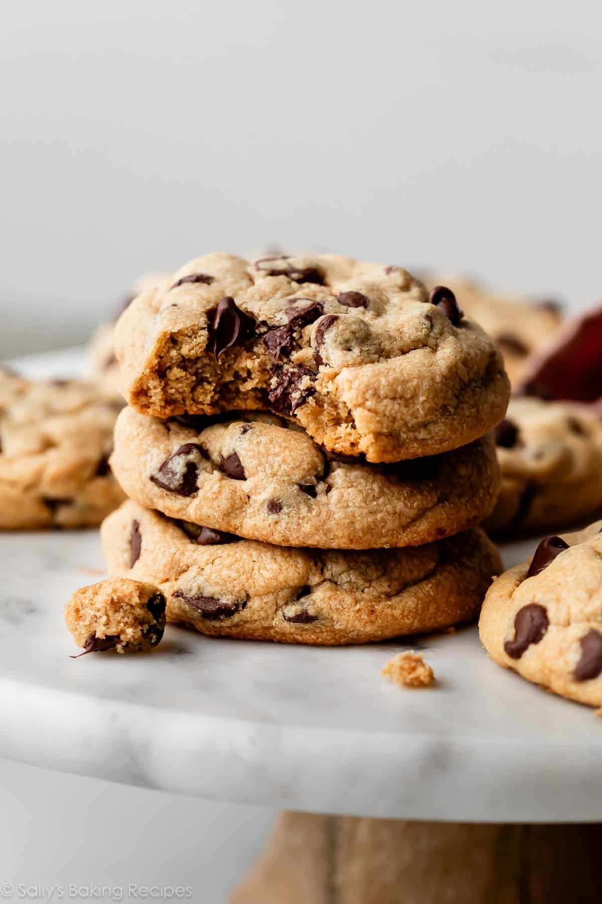

Peanut Butter Cookies

Ultra-soft and thick peanut butter chocolate cookies that are filled to the brim with chocolate chips.
Ingredients:
- 2 and 1/2 cups (313g) all-purpose flour (spooned & leveled)
- 1 teaspoon of baking soda
- 1 teaspoon baking soda
- 1/2 teaspoon salt
- 1 cup (16 Tbsp; 226g) unsalted butter, softened to room temperature
- 1 cup (200g) granulated sugar
- 3/4 cup (150g) packed light brown sugar
- 2 large eggs, at room temperature
- 2 cups (500g) creamy peanut butter
- 2 teaspoons pure vanilla extract
- chocolate or chocolate chips
- optional: 1/2 cup (100g) granulated sugar for rolling
Steps:
- Whisk the flour, baking powder, baking soda, and salt together in a medium bowl. Set aside.
- Using a hand mixer or a stand mixer fitted with a paddle attachment, cream the butter and both sugars together on medium speed until smooth, about 2 minutes. Add the eggs and beat on high until combined, about 1 minute. Scrape down the sides and bottom of the bowl as needed. Add the peanut butter and vanilla, then beat on high until combined.
- Add the dry ingredients to the wet ingredients and mix on low until combined. With the mixer running on low speed, add the chocolate chips. Dough will be thick and soft.
- Cover and chill the dough in the refrigerator for 1 hour and up to 3 days. If chilling for longer than a few hours, though, allow the dough to sit out at room temperature for at least 30 minutes before rolling and baking because the dough will be quite hard and the cookies may not spread that much.
- Preheat oven to 350°F (177°C). Line large baking sheets with parchment paper or silicone baking mats.
- Scoop cookie dough into large balls, about 3 Tablespoons of dough per cookie (about 60g, it’s a lot!), and, if desired, roll the balls in granulated sugar. Coating in sugar is optional. Place 8 balls onto the cookie sheets. Gently press down on each ball to *slightly* flatten.
- Bake each batch for 14–15 minutes, or until the edges appear set and lightly browned on the sides. The centers will still look very soft.
- Cool cookies for 10 minutes on the baking sheet. During this time, I like to press a few more chocolate chips into the tops of the warm cookies. (This is optional and only for looks.) Transfer to wire rack to cool completely. The cookies will slightly deflate as they cool.